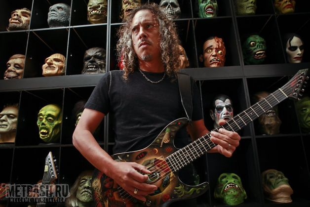
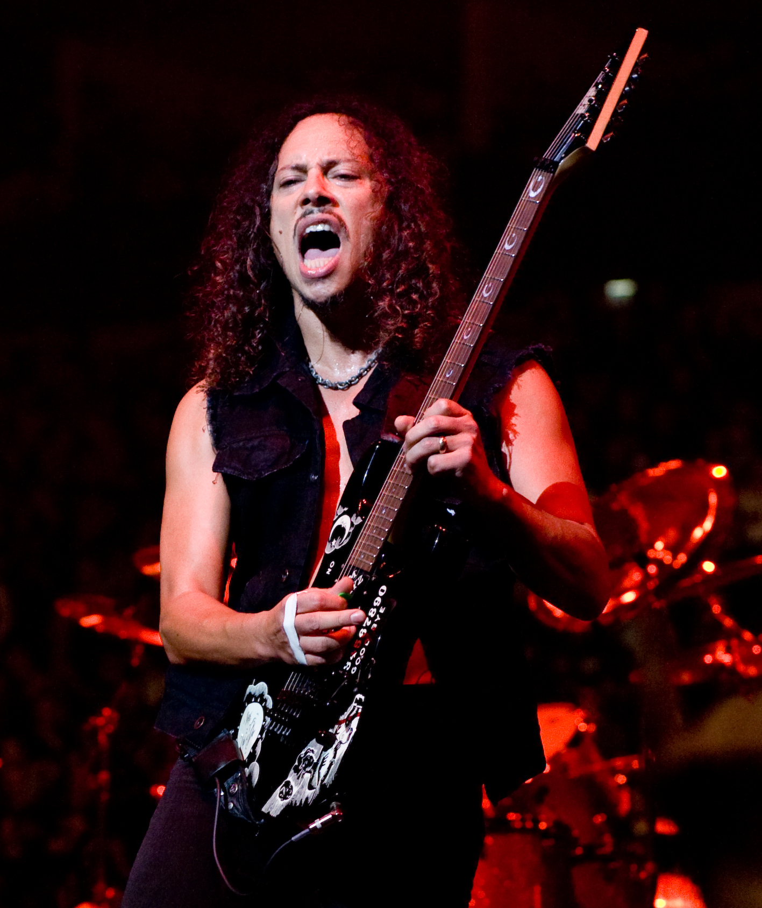

Кирк Ли Хэмметт (англ. Kirk Lee Hammett; 18 ноября 1962, Сан-Франциско, Калифорния, США) — американский гитарист, автор песен. Наиболее известен как участник группы Metallica. Занимал 11-е место в списке величайших гитаристов всех времён (в переизданном списке 2011-ого года его уже нет). Был учеником гитарного виртуоза Джо Сатриани. Владеет именной серией гитар фирмы ESP (модели KH). Кроме них использует Gibson Les Paul, Jackson Randy Rhoads, ESP Flying V и гитары фирмы Fender.
Родился 18 ноября 1962 года в Сан-Франциско. Его отец был ирландским моряком, а мать приезжей из Филиппин. Кирк окончил 11 классов в школе De Anza в городе Ричмонд в Калифорнии. У него есть старший брат Рик и младшая сестра Тони.
Будучи ребёнком, Кирк проявлял большой интерес к музыкальной коллекции своего брата, который значительно повлиял на его решение заниматься гитарой. В возрасте 15 лет приобрёл свою первую электрогитару на деньги, заработанные в Бургер Кинге. Хэммет рос под влиянием таких групп, как Led Zeppelin, Black Sabbath, Deep Purple, Status Quo, The Rolling Stones, Jimi Hendrix, UFO. Наибольшее влияние на его творчество оказал Джими Хендрикс.
В 1980 году Хэмметт вместе с Томом Хантингом, Тимом Агнелло и Карлтоном Нельсоном основали группу Exodus и одни из первых начали играть трэш-метал.
В 1983 году на Кирка Хэмметта обратила внимание тогда ещё молодая группа Metallica, предложив тому занять место соло-гитариста, сменив на посту Дэйва Мастейна (ныне лидер Megadeth). Таким образом, с 1983 года Кирк является ведущим гитаристом Metallica и автором многих риффов.
За более, чем 30 лет карьеры в Metallica Кирк успел попользоваться огромным спектром инструментов, эффектов, усилителей и прочего. На сегодняшний день существует множество его подписных гитар, примочек и т. д.
На протяжении карьеры в Metallica Кирк использует много различных усилителей. Во времена записи Ride the Lighting он пользовался усилителями и кабинетами Marshall. Для записи третьего альбома — Master of Puppets, Кирк и Джеймс купили усилитель Mesa/Boogie MarkIIC+. И по сей день Хэммет использует усилители Mesa/Boogie.
В сентябре 2007, компания Randall Amplifiers объявила о сотрудничестве с лид-гитаристом Metallica для выпуска линии подписных усилителей, «голов», комбоусилителей и предусилителей.
Хэмметт был женат дважды. Первый брак с Ребеккой продлился три года и окончился в 1990 году, во время написания «Black Album». В настоящее время Кирк проживает в Сан-Франциско вместе со своей женой Лани (с 31 января 1998 года) и двумя сыновьями — Энджелом и Энзо.
Хэмметт увлекается сёрфингом, кулинарией, археологией, пирсингом, автомобилями и коллекционированием фильмов ужасов. Также известно что он вегетарианец
Кирк любит слушать музыку UFO, Black Sabbath, Deep Purple, Led Zeppelin, Джо Сатриани, Warren Haynes, Adrian Belew, Фредди Кинга, Buddy Guy, Джими Хендрикса, Kiss, Santana.
Кирк страдает синдромом дефицита внимания (не в гиперактивной форме). Также страдает от ОКР. Ещё известно, что он употреблял наркотики, но не очень длительное время.